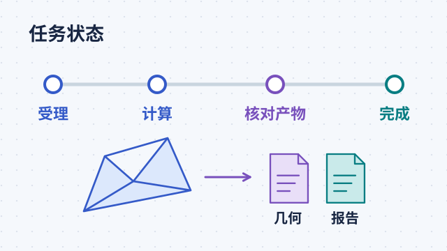
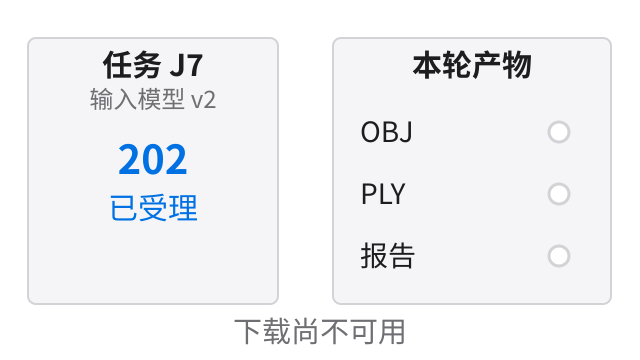
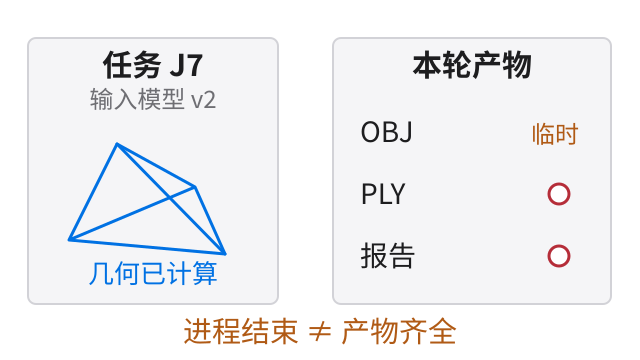
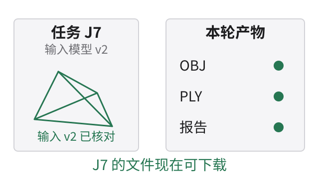

点击“导出”后，网页几乎立刻作出响应，大文件却要稍后才能下载。浏览器请求与真正做计算的进程有不同的生命周期。要解释一个停在 99% 的进度条，先问这个百分比是哪一步报告的。
把一次点击变成一项有身份的任务
一个重建模型可以先后导出低精度预览网格和高精度网格，还可能在中途切换到新模型。点击时应把输入模型版本、导出参数和输出格式固定下来，并给任务分配独立标识。重新打开页面时靠这个标识查询，才能知道屏幕上那行状态属于哪次计算。
最小的任务记录可以从三组字段开始：任务标识和输入版本、当前阶段和更新时间、产物索引和终止原因。只有运行中的任务需要持续更新阶段，已结束的任务则应该能被再次查询。浏览器刷新不应让这些事实依赖旧标签页里的一个计时器。
服务器可以先回答“已受理”，稍后才真正开始。HTTP 的 202 Accepted 就表达已接受处理、尚未完成的语义。一个有用的响应还会告诉客户端去哪里查看进展。拿到受理响应后立即点亮下载链接，是把请求交付和计算完成混成一件事。
设任务甲导出粗网格，任务乙稍后导出细网格。甲的进度在网络中迟到时，页面应根据任务标识更新甲自己的记录。用“当前最后收到的消息”覆盖正在查看的任务，很容易看到乙的进度突然从 15% 跳到 90%。


没有一个百分比能代表所有阶段
导出可能依次做深度融合、提取三角面、写入文件、生成评估说明。前两段能估算已处理的视图或体素数量，写文件阶段则可能只知道已经开始，暂时没有可信的完成比例。把阶段名和最近进展一并展示，通常比用计时器猜百分比更容易理解。
一种方案是将计算进度保持在 99% 以内，真正的收尾检查通过后再显示 100%。这个上限只是界面约定。假如已经融合 50 张视图中的 50 张，能说明融合循环完成。文件系统是否还有足够空间、导出器最终是否正常退出，都要靠别的证据判断。
进程退出只是收尾的一部分
管理自己启动的子进程时，父进程可以通过 waitpid 等接口读取退出状态。进程号本身可能被操作系统重复分配，服务重启后仅看到同一个 PID 还在，不足以确定它就是原来的导出工作。跨重启恢复应结合任务记录、进程身份和当前产物状态判断。
从下载端反推，任务承诺哪几种文件，就应该逐项核对。例如要提供 OBJ、PLY 和评估说明，先确认这些文件属于本次任务，再按需检查是否为空、能否解析、是否已登记到正确版本。若承诺可直接下载，最后还应通过实际下载入口取一次。同名的旧文件即使完好，也不能算本轮成功。
从受理到下载，逐项看证据
假设任务 J7 要从模型 v2 导出 OBJ、PLY 和一份报告。固定这份清单，观察什么时候可以对外宣布完成。

受理只是排上任务
查看大图
浏览器提交导出后拿到任务 J7 和 HTTP 202。这个响应说明请求已经被受理，不能据此认为计算成功，更不能立刻把下载链接点亮。图里的产物栏仍是空的；之后的查询必须带着 J7，才能把本次输入模型 v2 与同名旧文件区别开来。

计算结束还要检查文件
查看大图
导出进程报告计算循环完成，但磁盘上只有临时 OBJ，PLY 与报告还没有齐。图中的三角形表示几何已经算出，不代表文件写入、解析和登记也已完成。即使退出码是 0，管理层仍要核对这次任务承诺的产物，不能借用上一次导出的同名文件补空位。

验证后发布下载入口
查看大图
最终文件写好后，检查 OBJ、PLY 与报告都属于 J7 和模型 v2，内容可解析，再发布对应下载入口。图中三项都变绿，表示这一轮的产物条件已经满足。这里假定任务确实承诺这三项文件；实际检查清单应与接口约定一致，而不是把固定扩展名套给所有导出。
任务状态由实际证据推进：受理、计算退出、文件验证与下载可用分别检查。百分比到 100% 不能替代产物验收。
小练习：目录里已有一份能打开的 PLY，但属于昨天的任务 J6，能让 J7 通过吗？
不能。它能证明旧文件有效，不能证明本轮输出完整。必须核对任务身份、模型版本和对应产物，避免把旧结果冒充新结果。
例如果导出程序约定先写临时 OBJ，成功后才改为正式文件名，那么状态检查应读取正式文件。这样下载端不会抢先读到只写了一半的几何数据。若报告和几何来自不同任务，即使两份文件分别都能解析，也要在同一版本核对时拒绝这组结果。
拿临时文件做两个小实验
先让一个替代程序输出“完成 100%”并以零退出，但故意少生成一种必需文件。系统正确的处理应是报告产物不完整，并保留本次日志。再让另一项任务完整输出，验证浏览器中的链接确实指向它的模型版本。
两组都通过后，做一次刷新与重复查看。刷新是在重新读取任务状态，通常不应再创建一遍相同的导出。将“启动”和“查询”保留成两个清晰的入口，能同时减少重复计算和让人困惑的进度变化。